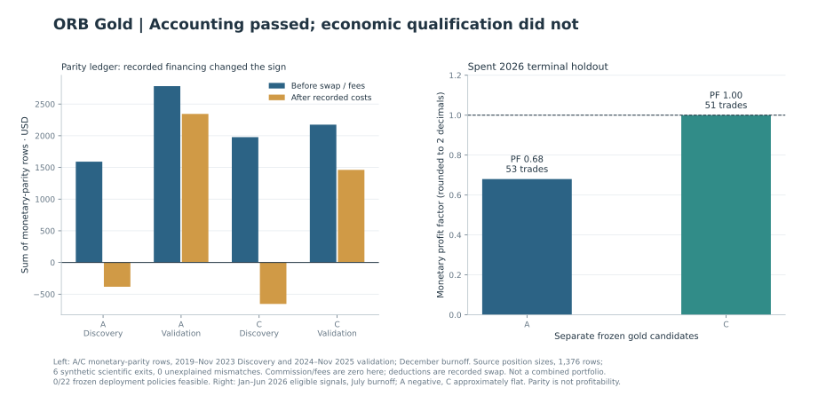

Opening Range Breakout (ORB)
Does the opening range tell us more than the time of day?
The Nasdaq candidate passed its first validation block and failed its second. In a separate gold study, the implementations agreed, but financing erased the discovery gains of both candidates in the monetary comparison.
Decision Tested branches closed for deployment.
Limitation Some successor candidates never reached an out-of-sample test and still have no verdict.
From an opening range to a trade
The intuition is continuation: define an early range, wait for a completed candle beyond its boundary, then trade toward a fixed target with a predefined stop. Testing it requires a clock, executable entry and order lifetime.
Two markets with separate test periods
The index study began with 1,728 timing configurations on available Discovery history from January 29, 2020 through December 2024. The first year was partial. Only 140 configurations had positive total R; 22 met the frozen robustness criteria. One eligible long-side plateau contained 18 configurations. O1
The gold research asked a different set of questions on Discovery history in 2019 to 2023 and validation history in 2024 to 2025. Eligibility fences excluded the final month of each segment from new signals while permitting existing lifecycle completion. Three candidates were frozen before the later checks.
Source text · O3 · O4
Gold financing and the deployment decision
This ledger supplies a direct economic comparison: at its recorded position sizes, financing changed both candidates' Discovery totals from positive to negative. It contains six explicitly synthetic scientific exits, and is narrower than a physical broker-account or live-fill qualification. The separate terminal bars keep their reported rounding. Neither favourable validation nor accounting parity rescued the frozen deployment gate. Full-resolution economics · Monetary definitions and limits



What did the range boundary explain?
A timing plateau does not establish the mechanism used to name it. The next study compared the actual high/low range with same-width synthetic ranges centered on alternative reference prices, alongside simpler clock and bullish-candle controls. The candidate stayed frozen throughout this posthoc Discovery investigation. O1
The special-geometry claim failed this test. Predictive content in the broader timing region remained unresolved, as did any alternative causal explanation. The frozen candidate proceeded to its authorized validation with that mechanism claim unsupported.
The second Nasdaq validation block
The subsequent block tested eligible sessions from February through June 2026. January had already been consumed by lifecycle completion for the preceding study; July was reserved for burnoff. A month used to finish an existing position is already spent evidence.
The second block produced 53 trades, −0.576R and profit factor 0.982. Only eight of 18 regional configurations were positive, and the median configuration mean was negative. Both standalone confirmation gates failed. O2
Limits of the comparison
This case study covers separate index and gold research lineages. Their results must remain separate: they used different histories, eligibility rules and validation splits. All figures come from completed historical private research reports, not a public replication or a live trading record. Where results use price-space R, R means price movement normalized by the trade's initial executable risk distance. It is not an account return or automatically a financing-adjusted profit measure.
Source text · O1 · O2 · O4
Closeout of the tested branches
The opening-range breakout program closed on September 30, 2026 without authorizing deployment. Some economic hypotheses had failed; some candidates stopped after conflicting validation; others were parked with promising Discovery results and unopened OOS. The unperformed tests have no result. O6
Source evidence and reproducibility
Original Markdown article · O1 · O2 · O3 · O4 · O5 · O6
The public scripts rebuild selected exhibits from disclosed aggregates. The historical backtests require private inputs and implementations.